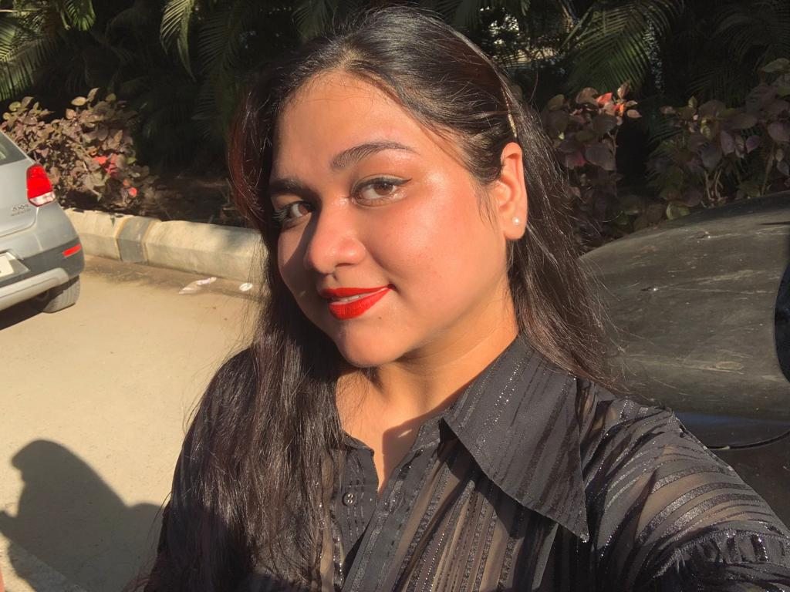

Hey, I'm Baishali, a B.Tech Computer Science student at SRM University. Passionate about tech and
innovation, I specialize in Java, Python, and C++. Recently, I worked on projects like the Banking
Management System, refining my coding and problem-solving skills.
Academic Journey:-
I graduated from S.K.M. public School with a strong foundation in mathematics and sciences, laying the
groundwork for my current pursuits in computer science.
Hobbies:-
Beyond coding, I find joy in [mention a hobby or two, e.g., reading, hiking, or playing a musical
instrument]. These activities not only provide a refreshing break but also contribute to my holistic
development.
Coding Competitions:-
Outside of class, you'll often find me immersed in coding competitions and hackathons, where I enjoy the
thrill of solving challenges under tight deadlines. These experiences not only sharpen my skills but
also expose me to diverse problem-solving approaches.
Future Focus:-
Eager to contribute my skills to real-world impact, I'm particularly interested in the realms of
Artificial Intelligence and Machine Learning. Exploring the potential of these technologies to
address complex problems is a key focus of my academic and personal endeavors.
